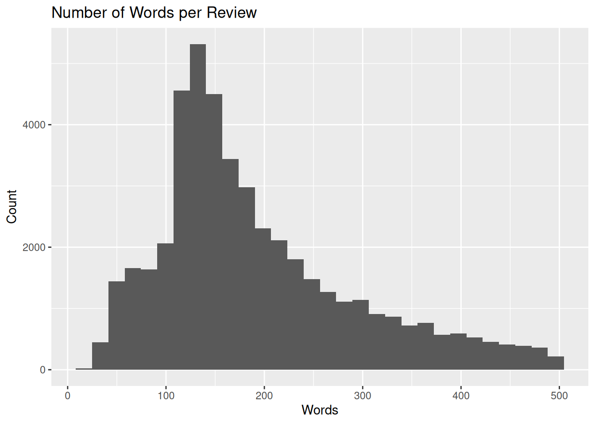
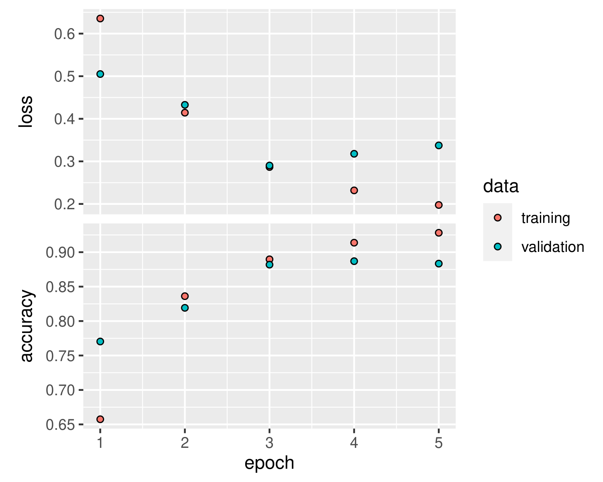
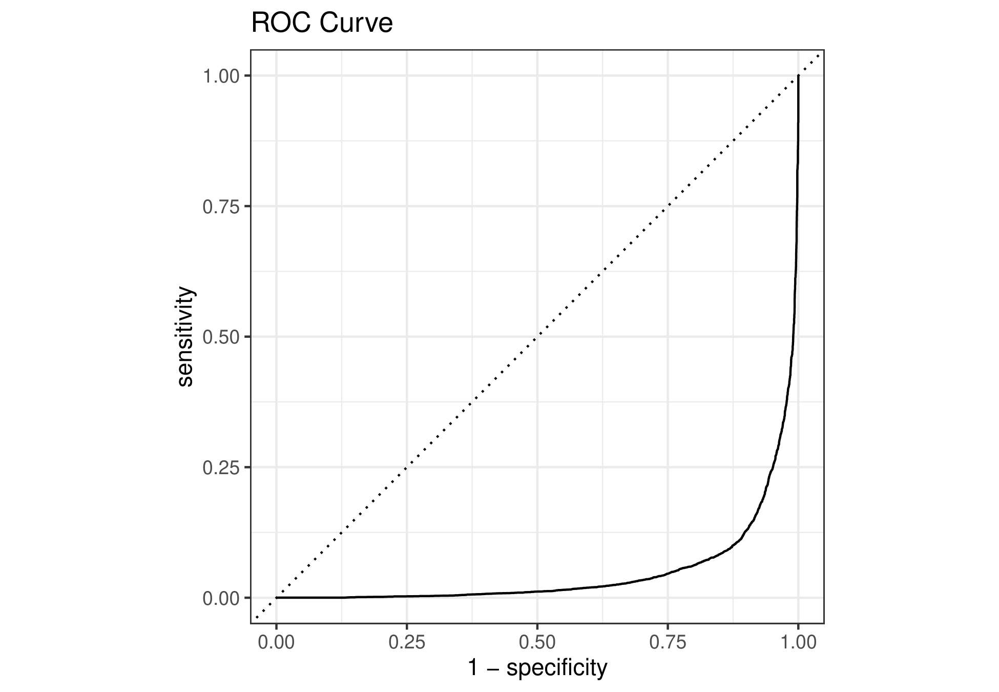
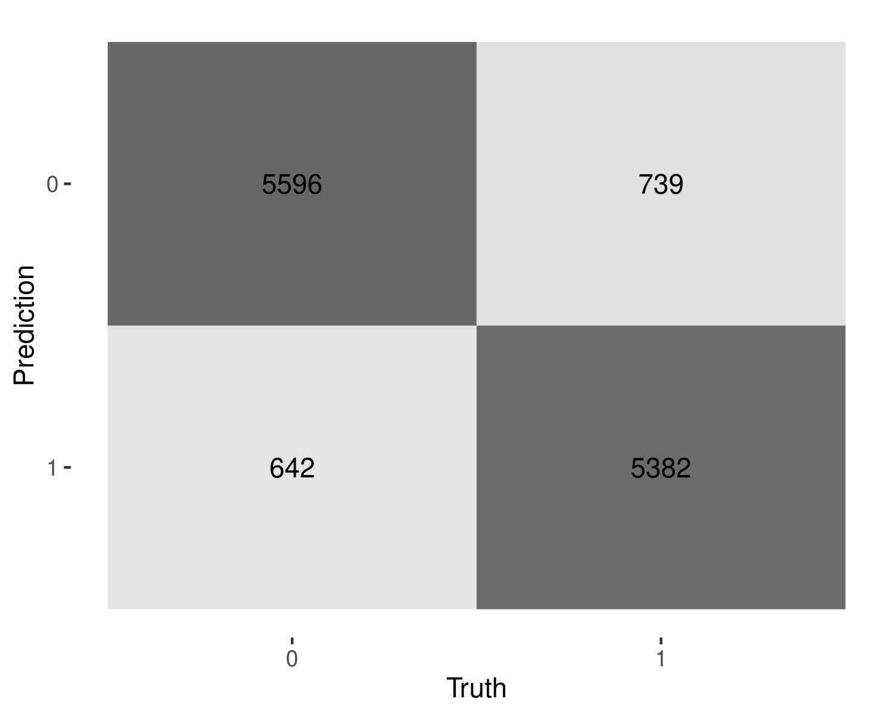
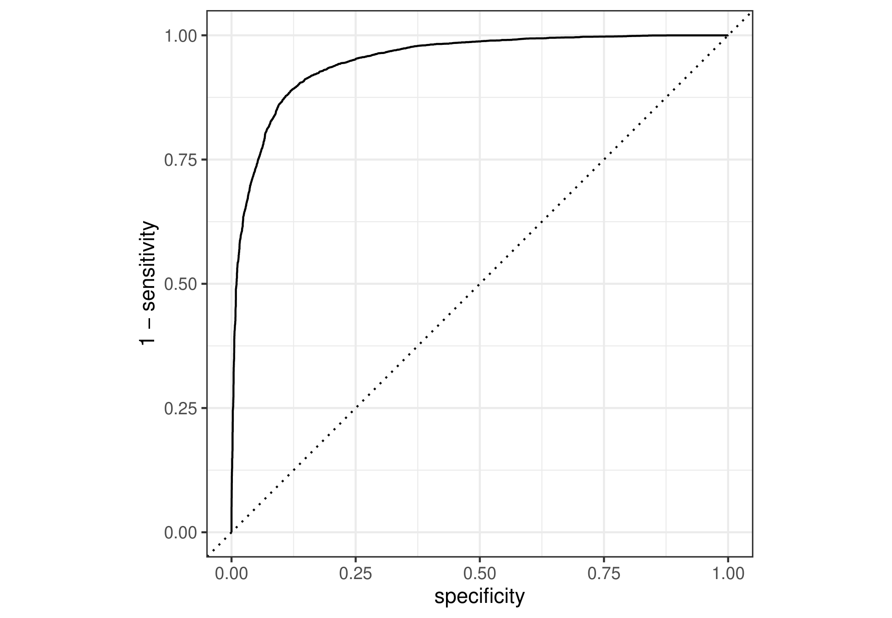

imdb_tbl_view <- imdb_raw_tbl |>
mutate(review = gsub("https?://.+", "", review)) |>
mutate(review = gsub("<.*?>", "", review)) |>
mutate(review = gsub("[^\x01-\x7F]", "", review)) |>
mutate(sentiment = as.factor(sentiment)) |>
mutate(sentiment = as.integer(sentiment)) |>
mutate(sentiment = sentiment - 1) |>
filter(tokenizers::count_words(review) < 500) |>
filter(tokenizers::count_words(review) > 20)
imdb_tbl <- imdb_tbl_view |>
mutate(review = tolower(review)) |>
mutate(review = gsub("[@#$%^&*()_+=\\|<>/~`<>]", "", review)) |>
mutate(review = gsub("[!;:,.?]", " ", review)) |>
mutate(review = gsub("\\s+", " ", review))The goal of this model is to classify whether or not a IMDB review has positive or negative sentiment towards the movie it is reviewing. The Long Short Term Memory Model will be used for binary classification of positive and negative sentiment.
Dataset Description
IMDB dataset with 50,000 movie reviews with sentiment intended for binary sentiment classification. The sentiment is either positive or negative. When put through the neural network, sentiment 0 is negative and 1 is positive. The review is raw text data from the IMDB website which needs to be cleaned. The data was uploaded to Kaggle in 2019, IMDB Dataset of 50K Movie Reviews. The data was most than likely scraped from the IMDB Website. Then the data was manually labeled as having positive or negative sentiment.
What is LSTM?
Long Short Term Memory is neural network that is ideal for processing and predicting data. LSTM is a recurrent neural network that uses context neurons for short term memory. These context neurons have their value updated when going through the current layer of the model. The neuron then resets at the end of the layer to zero. The purpose of the context neuron is to provide the recurrence of information back to previous neurons.
LSTM uses gradient descent for the cost function of the neuron weights. Training a neural neural network uses backwards propagation between layers in the model.
LSTM is also faster at learning and more successful than other models like Recurrent Neural Networks (RNNs). In order to use a neural network, the model needs lots of data to train the model. However, in the long run the model is be better than using a linear regression model where each variable is every word.
LSTM Models use Three Gates (in this order):
Forget Gate
- This gate determines what data is forgotten based on previous hidden neural network layers and the new data being inputted.
Input Gate
- This gate determines what data should be added to the long-term memory based on previous hidden layers and new data. This gate uses tanh activation [-1,1] for long term memory portion and sigmoid activation [0,1] for the filtering portion. Then these outputs are multiplied together and then added to the layer neuron.
Output Gate
- This gate determines what data should be passed through to the next neural network layer. The gate uses tanh activation for outputting to a new layer.
Cleaning Data
This text filtering will remove any links, html formatting, and emojis. We are also converting the sentiment to an integer so the model can use it properly. We also remove reviews that have more than 500 words and less than 20 words. We are removing any reviews that have more than 500 words since more words will slow down our model. We are also remove any reviews with less than 20 words since it is difficult to get sentiment based off of few words even for a human let alone a neural network.
We use the tokenizer to view the average number of words per review. The average number of words per review is a right skew distribution. The sentiment is close to evenly split among both positive and negative sentiment.
imdb_tbl |>
ggplot(aes(x = tokenizers::count_words(review)))+
geom_histogram(bins = 30)+
labs(title="Number of Words per Review",
x="Words", y="Count")
imdb_tbl |>
reframe(sentiment) |>
count(sentiment)# A tibble: 2 × 2
sentiment n
<dbl> <int>
1 0 23220
2 1 22902Data Split
set.seed(12345)
imdb_split <- initial_split(imdb_tbl)
imdb_train <- training(imdb_split)
imdb_test <- testing(imdb_split)Tokenize
We must tokenize the reviews in order for the LSTM model to interpret each token individually instead of using the entire review as one input. The tokenizer also converts the entire dataset into integer id values which the neural network model can use. We are only considering reviews with a maximum review word length of 500 words and maximum number of words the model will use is 20,000. Ideally, we would increase the max_words and max_length values, but this would require more computational power and time.
max_words <- 1e4
max_length <- 500
imdb_recipe <- recipe(~review, imdb_train) |>
step_tokenize(review) |>
step_tokenfilter(review, max_tokens = max_words) |>
step_sequence_onehot(review, sequence_length = max_length)
imdb_prep <- prep(imdb_recipe)
imdb_train_token <- bake(imdb_prep, new_data = NULL, composition = "matrix")Installing Keras w/ Tensorflow
From now on I have switched eval to false due to the compute intensive nature of Machine Learning. However, all of this code has been run on my personal machine.
library(reticulate)
library(keras)
install_keras(Tensorflow = "2.11.1", restart_session = FALSE)Training Validation
Set up for validation in the training dataset. We are also tokenizing the entire validation using our previous recipe imdb prep. This is so we can test the results of our model without over fitting on the final testing dataset.
set.seed(1234)
imdb_value <- validation_split(imdb_train, strata = sentiment)
imdb_analysis <- bake(imdb_prep, new_data =
analysis(imdb_value$splits[[1]]), composition = "matrix")
imdb_assess <- bake(imdb_prep, new_data = assessment(imdb_value$splits[[1]]),
composition = "matrix")
sentiment_analysis <- analysis(imdb_value$splits[[1]]) |> pull(sentiment)
sentiment_assess <- assessment(imdb_value$splits[[1]]) |> pull(sentiment)Classification Model
Initial layer embedding is used to convert tokens into a usable layer for the lstm model to process. Then the lstm uses long and short term memory logic to determine which tokens are important for classification. The final dense layer converts the output from the lstm layer into an interpretable output.
The LSTM layer uses a dropout of 0.4 to reduce over fitting of the training data. This is the same idea with recurrent dropout.
The sigmoid activation moves the range of the previous layer to a value between 0 and 1 and is used for classification.
Optimizer: Adam
- This optimizer algorithm is used for gradient descent and is an efficient choice for neural networks.
Loss: Binary Crossentropy
- Also called Log Loss, binary crossentropy evaluates how good the predicted probabilities are, using a log scale.
Maximizing Metrics: Accuracy
- The highest accuracy is the goal of the neural network.
lstm_mod <- keras_model_sequential() |>
layer_embedding(input_dim = max_words + 1, output_dim = 32) |>
layer_lstm(units = 32, dropout = 0.4, recurrent_dropout = 0.4) |>
layer_dense(units = 1, activation = "sigmoid")
lstm_mod |>
compile(
optimizer = "adam",
loss = "binary_crossentropy",
metrics = c("accuracy")
)Fitting Model
This plot details the training and validation results after each epoch. An epoch is a phase of training where the model passes over the entire dataset. The batch size is the number of samples that will be used throughout the network. It will take that number of training samples and propagate it through the network and continue doing that until all samples have been propagated. This model takes a long time to train on my computer, since each review contains around 150 words and there are 34,600 reviews in the training dataset.
val_history <- lstm_mod |>
fit(
imdb_analysis,
sentiment_analysis,
epochs = 5,
validation_data = list(imdb_assess, sentiment_assess),
batch_size = 500
)
plot(val_history)
val_res <- evaluate(lstm_mod, imdb_assess, sentiment_assess)
val_resThis is the Accuracy and Loss of the LSTM model on the training dataset. Loss represents the distance between the true sentiment and predicted sentiment by the model.
Predict on Testing Data
The ROC Curve in the lower right corner of the graph which means that our model is extremely good at predicting the inverse of what the sentiment should be. I don’t know exactly what is going on here.
imdb_test_assess <- bake(imdb_prep, new_data = imdb_test, composition = "matrix")
imdb_predict_raw <- tibble(pred = lstm_mod |>
predict(imdb_test_assess)) |>
mutate(pred = as.numeric(pred))
imdb_predict_raw |>
mutate(sentiment = as.factor(imdb_test$sentiment)) |>
roc_curve(sentiment, pred) |>
autoplot()+
labs(title = "ROC Curve")
imdb_predict_tensor <- lstm_mod |>
predict(imdb_test_assess) |>
`>`(0.5) |>
k_cast("int32")
imdb_predict <- tibble(pred = as.array(imdb_predict_tensor))
imdb_test_pred <- imdb_test |>
mutate(sentiment = as.factor(sentiment)) |>
mutate(pred = as.factor(imdb_predict$pred))Confusion Matrix and Accuracy
The heat map shows the false positives and negatives that our model predicts on the testing dataset. The accuracy of this model is relatively high, however, with further tweaking or cross validation of many parameters, this could be much better. Ideally more epochs and increasing the max words would increase the accuracy of the model.
imdb_test_pred |>
conf_mat(sentiment, pred) |>
autoplot(type = "heatmap")
imdb_test_pred |>
mutate(pred = as.numeric(pred) - 1) |>
roc_curve(sentiment, pred) |>
autoplot()
imdb_test_pred |>
accuracy(sentiment, pred)
imdb_test_pred |>
specificity(sentiment, pred)
imdb_test_pred |>
sensitivity(sentiment, pred)

# False Positive, Sentiment Negative, Predict Positive
error_positive <- imdb_test_pred |>
filter(sentiment == 0) |>
filter(pred == 1)
# False Negative, Sentiment Positive, Predict Negative
error_negative <- imdb_test_pred |>
filter(sentiment == 1) |>
filter(pred == 0)Let’s first take a look at one of the false positives:
- once in a while a movie will sweep along that stuns you draws you in awes you and in the end leaves you with a renewed belief in the human race from the artistry form this is not it this is an action movie that lacks convincing action it stinks rent something else
The start of the review appears to be positive and the model predicts that. The ending of the review is what is important for the overall sentiment of the text. The model struggles with understanding the sentiment throughout the entire review. The important section of the review is the ending which contradicts the initial positive review.
Now let’s look at one of the false negatives:
- a lovely little b picture with all the usual joe lewis touches people ripping up pillows and auras of lurking fear also alas an ending that comes out of nowhere because apparently the auteur has lost interest in the movie or perhaps because as a b picture it has to fit into a slot
The start of the review appears to be positive which the model understands. However at the end of the review, the tone shifts to be negative sentiment. This is one issue with this dataset is that some of the reviews can be difficult to understand if a review is positive or not. In this case the individual who labeled this data had the opinion that it had positive sentiment towards the movie. In my opinion, I believe that the review has negative sentiment towards the movie due to the last line of the review.
Another main issue with this model is that it does not understand sarcasm. Sarcasm is difficult to train for; more complex models today have difficulty understanding it.
Testing Custom Reviews
custom_test <- tibble(review = "One of the best movies I have ever seen.
The plot is terrific and the actors are flawless.")
custom_test <- custom_test |>
add_row(review = "How could Christopher Nolan make such a terrible film.
I thought he was one of the best directors of our time, but he failed horribly.") |>
add_row(review = "The film started as a cinematic masterpiece, but ended as a flop.
It started out as stunning and beautiful film, but ended as a dumpster fire.
Genuinely disappointed.") |>
mutate(review = tolower(review)) |>
mutate(review = gsub("[@#$%^&*()_+=\\|<>/~`<>]", "", review)) |>
mutate(review = gsub("[!;:,.?]", " ", review)) |>
mutate(review = gsub("\\s+", " ", review))
custom_token <- bake(imdb_prep, new_data = custom_test, composition = "matrix")
custom_predict <- tibble(pred = lstm_mod |> predict(custom_token)) |>
mutate(review = custom_test$review) |>
mutate(pred = as.numeric(pred))Here are some custom reviews:
- “One of the best movies I have ever seen. The plot is terrific and the actors are flawless.”
The first custom review is obviously a positive review and the model correctly identifies it as positive sentiment. (pred = 0.887)
- “How could Christopher Nolan make such a terrible film. I thought he was one of the best directors of our time, but he failed horribly.”
The second custom review is also pretty obviously a negative review and the model correctly identifies it as negative sentiment. (pred = 0.28)
- “The film started as a cinematic masterpiece, but ended as a flop. It started out as stunning and beautiful film, but ended as a dumpster fire. Genuinely disappointed.”
This final review is significantly more difficult and does not correctly identify the negative sentiment. The model struggles with contradicting sentiment. The seems to be a lot more positive sentiment, but the last two words illustrates the critique’s stance on that specific movie. (pred = 0.75)
The model does a great job with correctly identifying obvious sentiment reviews, but struggles with complicated wording and sarcasm.
Model Changes
- Cross validation for parameters such as max words, epoch, batch size, or dropout
- Adding more layers to the LSTM model
- Using different model like the Gated Recurrent Unit Model (GRU)
- Not removing capitals and some forms of punctuation (definitely messed with the model)